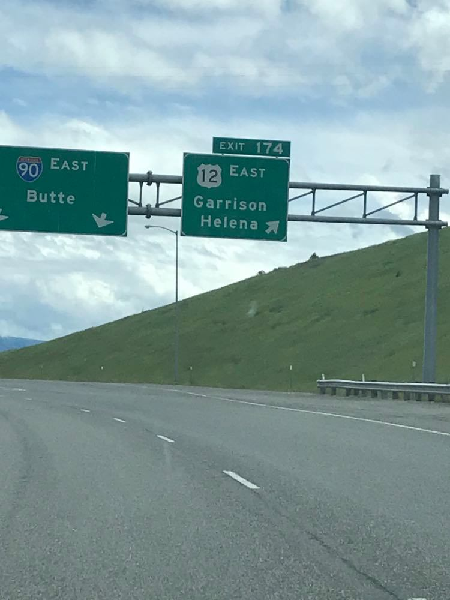
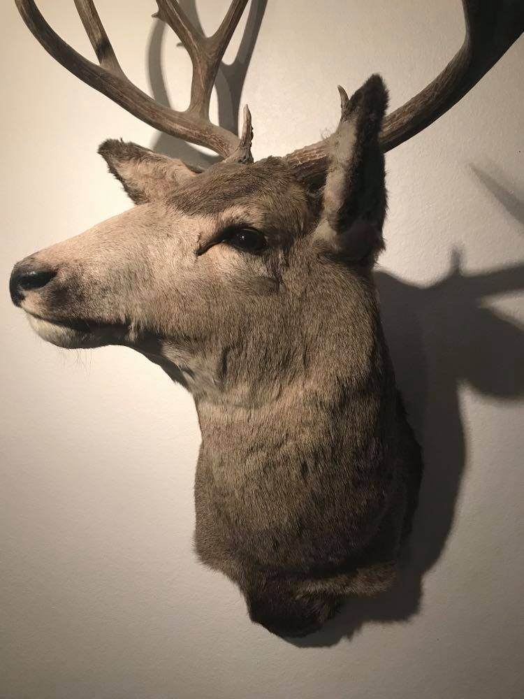

My Blog
Okay so I am still alive although I feel very dead inside at this moment in time. This may have to do with the minimilistic sleep I got last night (thanks Audrey) or the fact that I spent 8 hours in the car today. Either way it's been a great start to the trip.
My day started at 7 O'clock in a strangers house, I'd been house sitting with Audrey and we may or may not have stayed up till 2 watching Divergent and having deep but probably incomprehensible conversation. Alana picked me up at 8:45 and we hit up a coffee shop on the South Hill. All was going well until we realized that we had 15 miles left in the gas tank and were headed into the vast unknownness that is Lookout and Fourth of July Pass. A hasty turn around and we got the opportunity to drive back along Lake Coeur d'Alene or as I like to call it that pretty place in Idaho because I struggle with spelling. Alana and I got to know each other at least a little bit as when the caffeine kicked in I didn't shut up for about 3 and a half hours. Alana grew up in Minnesota, ran a marathon, and went to Kenya. All super cool things. My consensus is that she probably won't murder me and I have backing for this when she said that she's scared of what my mom might do.
I'll admit that I had a little twinge of sadness when we went past the Garrison Exit. I guess I can say that I do miss school or at least sleeping in my hammock. 4 hours in we stopped in Butte and I finished my coffee. I may have set a World Record for amount of time to consume one 12 ounce coffee. Going in to use the restroom was an experience. It was one of those places that is a maze to get into and by the time you actually get to the bathroom you aren't entirely sure if you are still in the same dimension. The trip took a different turn after Butte in two important ways. One I started playing music because my brain was slowly dying and we brought out the snacks. Today we ate an entire bag of sweet potato chips. We had a really cool moment when I went to describe a hotsprings (Elkhorn to those who might know it) and she'd been there the previous year with her boyfriend. Maybe had it's a small world playing in my head just a little bit.
The conversation kind of fissled as I think we both began to feel that there had never been anything before the car and that we had always been in the car. Southern Idaho had me thinking about Napoleon Dynamite and I half expected to see "Vote for Pedro" signs in the lawn.
Most of the drive was honestly a bit of a blur and it went pretty well until I misdirected Alana and we ended up driving through a weigh station. If my mistake could be made worse it was because the weigh station was manned. The guy gave us a bit of a strange look. Just because we may be driving a smallish vehicle doesn't mean we might not have to weigh in. Clearly the man just didn't understand how many snacks we have. At long last we made it to the beautiful down of Driggs Idaho. (I originally thought it was named Dregs which really would be very unfortunate for anyone living there) We wandered up and down main street until we found a Mexican restaurant that would seat us. My burrito was pretty good but I wasn't sure what to do with the handful of iceburg lettuce on the side. Was it a salad? Was it a garnish? I'll never know because I ate it like popcorn. We then left Dregs I'm sorry Driggs behind and drove out into a field where eventually we found the Air BNB which we're staying at.
I was more than a little confused by the fact that it's a house with a family in it and we simply stay in the basement. It's like for people who want the child who never moves out of their house. Except we had to pay to stay here so maybe not. It's a pretty classy place although I'm positive that the mounts are totally judging me. You'd look this dead too if you sat in a car for 8 and a half hours. What really made me feel at home is the mom was upstairs scolding and arguing with her daughter which gives the place an extra something.
After stairing into space for 10-15 minutes Alana and I pulled out the map and began to look. It was a tough call between Death Canyon, Devil's staircase, Jackass pass, or even Bitch Creek Narrows. (These are all real places on the map.) In the end we decided on a 20 mile loop that my parents did 20 years ago. So it's quite possible that we may die tomorrow but up until then it'll have been a pretty sweet ride. I'm contemplating a RomCom and hot choclate before bed and maybe some stretching (I'm not as young as I used to be). I'm not sure if we will have service tomorrow but if I don't upload tomorrow don't assume I'm dead. That eventuality is only 50% likely. I haven't done a 20 mile day since I was about 11 and I've been gently sauntering downward in terms of physical not brokeness ever since. (Is that a thing? We're making it a thing.) Anyways thanks for taking the time to read hopefully there will be more to discuss tomorrow. Signing off for now.
-Claire